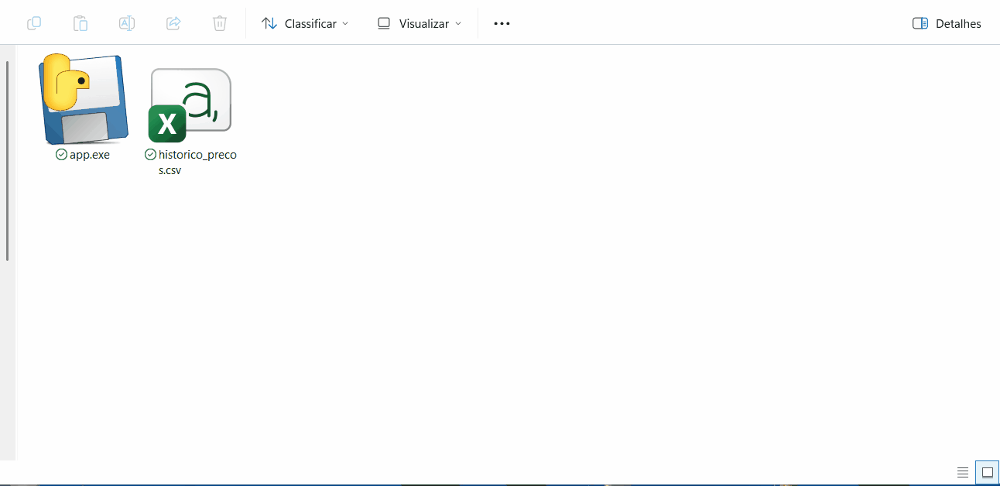
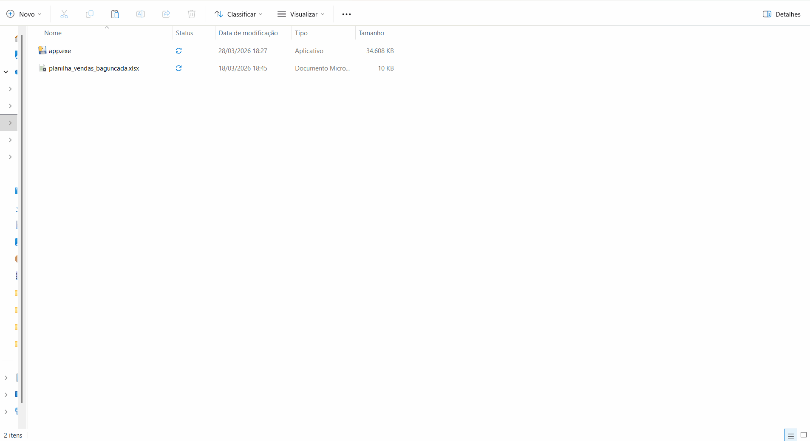
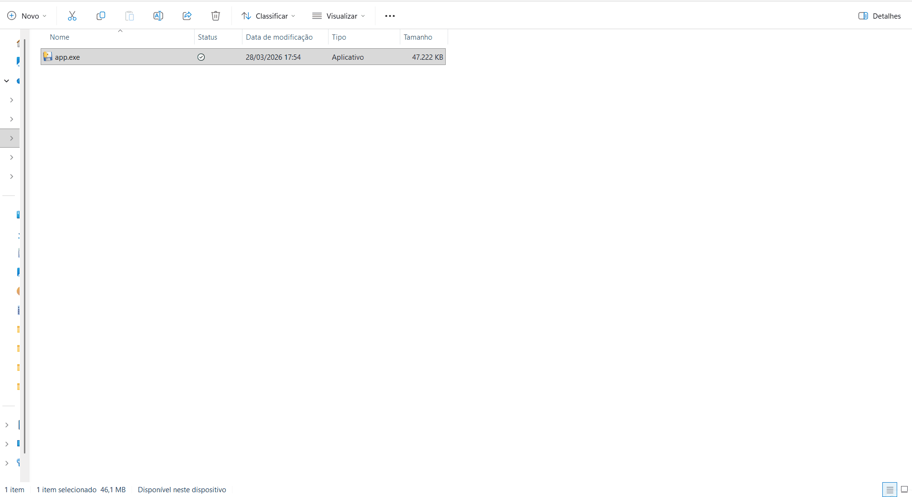

Sou desenvolvedor focado em automação de tarefas com Python, criando soluções que economizam tempo e reduzem trabalho manual.
Tenho experiência com automação de planilhas, coleta de dados e geração de relatórios, sempre buscando transformar processos repetitivos em soluções eficientes.

Sistema que monitora o preço de produtos e registra os valores em uma planilha Excel com data e hora.
Uso simples: basta executar o programa para atualizar a planilha automaticamente e avisar caso o preço do produto abaixou.

Sistema que processa dados de vendas, realiza limpeza automática e gera um relatório profissional em Excel com cálculos e indicadores.
Uso simples: basta executar o programa para limpar os dados e gerar automaticamente um relatório completo de vendas.

Sistema que coleta automaticamente vagas de emprego e organiza as informações em uma planilha Excel pronta para análise.
Uso simples: basta executar o programa para coletar as vagas e gerar automaticamente a planilha organizada.
Gostou do que viu? Entre em contato comigo para automatizar seus processos.
💬 Falar no WhatsApp colombov54@gmail.com Ver mais projetos no GitHub